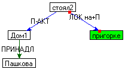

|
главная о нас продукты скачать демо технологии ^
| Диссертация А.Сокирко "Семантические словари в автоматической обработке текста (по материалам системы ДИАЛИНГ)" |
Введение
Глава 1. Обзор литературы
Глава 2. Досемантический анализ русского текста
Глава 3. Первичный семантический анализ русского текста
Русский общесемантический словарь
Семантическое отношение (поле ВАЛ, ДОП)
Общая категоризация лексики
Семантические характеристики
Взаимосвязи семантических характеристик
Формат словарных статей
Примеры словарных статей для некоторых классов слов (шаблонные статьи)
Иерархия семантических отношений
Множественные актанты (МНА)
Словосочетания в проекте ДИАЛИНГ
Словарь оборотов
Словарь групп времени (TimeRoss)
Тезаурусы
Локативный тезаурус
Финансовый тезаурус
Компьютерный тезаурус
Словарь устойчивых словосочетаний
Первичный семантический анализ
Введение
Вход семантического анализа
Выход семантического анализа
Алгоритм поверхностно семантического анализа
Общая схема работы
Инициализация семантических узлов и синтаксических вариантов фрагментов
Построение множества словарных интерпретации узлов
Построение групп времени
Построение узлов в кавычках
Построение узлов типа "друг друга"
Подключение операторов типа не, только
Построение устойчивых словосочетаний
Построение лексических функций-параметров
Установление отношений между локативными узлами
Интерпретация тезаурусных должностей и организаций
Процедура инициализации валентной структуры
Процедура построения графа гипотетических связей
Построение множественных актантов
Процедура удаления длинных связей
Процедура построения вариантов деревьев
Оценка деревьев
Проверка отношений по семантическим характеристикам
Проективность деревьев
Нарушение первой валентности (FirstValencyViolationCoef) и валентности из добавочных статей (RelationsNotFromRossCount)
Построение отношений по умолчанию
Межклаузные связи
Правило восстановления анафорических местоимений
Глава 4. Синтез английского текста
Заключение
Литература
Выступление на защите
| Глава 3. Первичный семантический анализ русского текста |
^ |
| |
Словосочетания в проекте ДИАЛИНГ |
^ |
Словосочетаниям в проекте ДИАЛИНГ уделено достаточно большое
внимание, поэтому актуальной стала задача их алгоритмической классификации.
Классификация построена на двух
дихотомиях, которые будут описаны ниже.
Вообще говоря, по способу обнаружения словосочетания могут быть условными
(выполнение всех синтаксических и лексических требований к словосочетанию в
тексте еще не является достаточным
условием их существования в тексте) и безусловными (для которых
синтаксические и лексические условия являются достаточными). Безусловные
словосочетания обладают повышенной синтаксической или лексической идиоматичностью типа: "бить баклуши". Условные
словосочетания требуют семантических свидетельств в пользу их существования,
поэтому в семантическом анализе должны рассматриваться обе альтернативы СемП (словосочетание и как свободная цепочка слов), что,
естественно, замедляет анализ. Составитель словаря должен помечать
условные и безусловные словосочетания
разными флагами; любые сомнительные случаи должны трактоваться как условные.
Противопоставление открытого и закрытого
словосочетания используется уже только в семантическом представлении.Открытое
словосочетание отличается от закрытого тем, что каждый элемент открытого
словосочетания получает отдельную словарную интерпретацию, а закрытое
словосочетание может получить только интерпретацию в целом. Поскольку элементы
открытого словосочетания получают собственную словарную интерпретацию, они
могут присоединять по валентностям другие узлы. Закрытое словосочетание
переходит в один семантический узел, а открытое в связный подграф, в котором
есть одна главная вершина, представляющая это словосочетание, но все остальные
узлы не являются пассивными. Вышесказанное сведено в следующую таблицу:
| Словосочетания = |
безусловные открытые |
безусловные закрытые |
| условные открытые |
условные закрытые |
Для увеличения скорости работы программы в нашей реализации все
открытые словосочетания являются
безусловными. Таким образом, класс условных открытых словосочетаний в
нашей реализации не рассматривается.
При поиске словосочетаний очевидно, что существуют некие ограничения на совместное
вхождение словосочетаний в какое-то предложение. Назовем эти ограничения
условием бесконфликтности. Бесконфликтность для закрытых словосочетаний
формулируется просто: если слово входит в закрытое словосочетание, то оно не
может быть частью другого словосочетания. Бесконфликтность вхождений
безусловных словосочетаний находится вне рамок данной диссертационной работы,
поскольку для обнаружения безусловных словосочетаний нужно использовать только
лексико-грамматические, но не семантические условия. Теоретический интерес
представляет бесконфликтность для условных открытых словосочетаний
(теоретический – поскольку в проекте ДИАЛИНГ они считаются безусловными).
Понятие конфликтности для них может быть улучшено, если учесть синтаксическую
однородность. Пусть X1, X2,...,XN текстовые вхождения элементов словосочетания
С1, а Y1, Y2,...,YN – словосочетания С2. Действительно, можно считать вхождения С1 и С2
бесконфликтными, если: 1. никакой Xi(1<=i<=N) не равен
никакому Yj(1<=j<=N);
2. или все Xi равны Yi
(1<=i<=N) кроме некоторого Xj,
который не равен Yj, но связан с ним синтаксическим
отношением однородности. Первый пункт это фактически бесконфликтность для
закрытых словосочетания, а иллюстрации второго пункта приведем пример. Пусть в
словаре есть два словосочетания "сделать возможным" и "сделать необходимым",
тогда вхождения этих словосочетаний во фразу "сделать возможным и необходимым"
будут считаться бесконфликтными по второму пункту определения. Любые дальнейшие
обобщения определения бесконфликтности с позиции однородности мы считаем
непродуктивными из-за отсутствия каких-либо подтверждающих их языковых
примеров. На самом деле, даже такая достаточно скромная коррекция по
однородности может вызвать много проблем на дальнейших этапах машинного перевода. Например, если одно словосочетание переводится одним словом, а другое – целой конструкцией, то программа будет
вынуждена перестроить однородность таким
образом, чтобы однородными стали уже не элементы словосочетаний, а словосочетания в целом.
В словарь оборотов внесены неразрывные словосочетания, которые
при анализе текста рассматриваются как единый комплекс, то есть, приравниваются
к однословным единицам. Обороты считаются условными закрытыми словосочетаниями. Формат этого словаря
разработан в соответствии с форматом словаря РОСС.
Грамматически (поле ГХ) обороты делятся на следующие категории:
|
Название грамматической категории оборота |
Комментарий |
Примеры |
|
ПРЕДЛ |
сложный предлог |
в дополнение к,
в зависимости от |
|
СОЧ_СОЮЗ |
сложный сочинительный союз |
а именно,
а затем |
|
ПОДЧ_СОЮЗ |
сложный подчинительный союз |
ввиду того, что
после того, как |
|
ВВОДН |
вводный оборот |
короче говоря,
по некоторым оценкам |
|
ЧАСТ |
частица |
как бы,
тем более |
|
НАР:обст_гр |
наречие, синтаксически являющееся
обстоятельственной группой. |
в основном,
в результате |
Первый тип оборотов – сложные предлоги – обычно имеют две
валентности: одну активную (к зависимой группе), вторую пассивную (к слову, которое подчиняет
данный предлог). Сложные предлоги вместе с СОЧ_СОЮЗ и ПОДЧ_СОЮЗ обычно входят в
категорию ОТНОШ (КАТ = ОТНОШ).
Союзы тоже имеют две валентности, но обе уже активные.
Три последних группы имеют обычно одну валентность (на главную
ситуацию, которую они распространяют).
Интересный случай представляют предлоги вместе
с, вдобавок к и т.д. Эти
предлоги фактически являются разновидностями оператора МНА, по причине которых
в семантической структуре возникает МНА.
Например, предложения
Петя ушел из школы вместе с Васей
Я получил премию вдобавок к
зарплате
На некотором уровне обобщения можно считать перефразами предложений:
Петя и Вася ушли из школы вместе
Я получил премию и зарплату
Как уже было
сказано, в МНА попадают все языковые механизмы, которые позволяют заполнять
одну валентность какой-то ситуации двумя
или более объектами. С этой точки зрения, предлог "c" также является разновидностью оператора МНА, например:
Пришел Петр с Машей <=?=> Петр
и Маша пришли.
Таким образом, предлогам вместе
с, вдобавок к приписывается семантический атрибут МНА вдобавок ко всем остальным характеристикам.
| |
Словарь групп времени (TimeRoss) [1] |
^ |
В словарь групп времени входят словосочетания, которые переходят
в семантический узел А в формуле ВРЕМЯ (А, С). Иначе говоря, любая
группа времени из данного словаря может заполнять валентность ВРЕМЯ какой-либо
ситуации: слабую или сильную. Синтаксически все группы времени, входящие в
данный словарь, являются обстоятельственными группами. В словарной статье
словаря TimeRoss содержатся сведения, необходимые для
того, чтобы она была найдена в тексте и правильно переведена.
Группы времени считаются безусловными открытыми
словосочетаниями.
Формат статьи словаря TimeRoss
разработан с опорой на формат статьи РОССа.
В заголовок статьи записывается словосочетание.
Поле СОСТАВ представляет собой набор элементов T1,...,Tn, где элемент Ti
может быть:
-
леммой, стоящей на i-ом
месте словосочетания;
-
дыркой (обозначается символом "_") – свободным
элементом словосочетания.
В тексте дырка может соответствовать одному графематическому
слову. ( В особо оговариваемых случаях
дырка может заполняться целой группой.) Например, заголовок словарной
статьи ИЗО ДЕНЬ В ДЕНЬ содержит четыре
элемента, и в нем нет дырок. Заполнители дырок считаются частью группы времени.
Таким образом, группы времени являются неразрывными.
Необходимые семантические, лексические и грамматические ограничения
элемента Ti записываются в
полях CХ(i),
ЛХ(i) и ГХ(i) соответственно. Например, грамматические ограничения T4
для статьи ИЗО ДЕНЬ В ДЕНЬ
будут такими:
ГХ(4) = 1 C
ед , рд.
Поле ГХ(i) содержит часть речи и граммемы элемента,
которые, впрочем, указываются, если только они необходимы для выделения группы
в тексте.
Поле СХ(i) может содержать константы
ДЕН_НЕД, МЕСЯЦ или ИНТРВЛ, которые обозначают, что на i-м месте группы должно
стоять название дня недели, месяца или любого временного интервала
соответственно. Слова, обозначающие любой временной интервал, берутся из
словаря РОСС.
В поле ЛХ(i) перечислены варианты лемматического
заполнения элемента Ti (предполагается,
что Ti – дырка). Если словарная статья
содержит ЛХ(i), то дырка Ti
может заполняться только одним словом (не группой!), взятым из перечня ЛХ(i).
Например, статья:
СОСТАВ = _ _
ГХ(2) = 1 С
ЛХ(2) = 1 весна
2 осень
покрывает только две группы к
весне и к осени, но не к зиме.
Здесь уже видна избыточность выразительных средств. Слово, записанное
в поле СОСТАВ, можно перенести в поле ЛХ, у которого значением будет только
одно это слово, а вместо этого слова в
поле СОСТАВ записать дырку. Чтобы избегать избыточности мы в дальнейшем будем
говорить только о поле ЛХ, включая в них недырочные
элементы поля СОСТАВ.
Если Ti - дырка и в статье отсутствует ЛХ(i),
то обязательно должно быть поле ГХ(i).
В таком случае, если ГХ(i)
= ЦК, то дырка может заполняться синтаксической группой КОЛИЧ, числительным или
графематическим словом с пометой ЦК.
Подробнее об алгоритме нахождения групп времени смотри ниже.
Любая словарная статья должна содержать поле СИНП - синтаксическое представление заглавного
словосочетания. В этом поле записана информация о синтаксических отношениях, которые
должны быть построены на данном словосочетании. Например:
СОСТАВ = КАЖДЫЙ _
СИНП = ПРИЛ-СУЩ (2,
1)
Отдельную проблему в описании групп времени составляют предлоги.
Вообще говоря, в системе ДИАЛИНГ предложные группы строит синтаксический анализ.
Для того чтобы синтаксис построил предложную группу, нужно, чтобы сначала была
построена именная группа с падежом, которым управляет предлог. Однако для
временных групп эта именная группа часто не может быть построена по общим
синтаксическим законам. Например,
чтобы построить предложную группу
"на 27 августа", нужно построить группу
"27 августа", которая не строится по общим законам, поскольку сама
является группой времени. В итоге, если предложная группа должна быть построена
синтаксисом (например, в ближайшее время),
то соответствующую запись нужно добавить в поле СИНП (в ближайшее время СИНП = ПГ (1, 3)),
иначе нужно воспользоваться полем ПРЕДЛОГi(j). В поле ПРЕДЛОГi(j) должен стоять тот предлог, который находится на i-м
месте и который нужно отнести к j-му элементу поля
СОСТАВ. Например, для группы "на 27 августа" нужно сделать запись ПРЕДЛОГ1(3) =
на+В. Таким образом строятся предложные группы,
построение которых не было возможно на синтаксическом уровне.
В поле СГС записывается номер семантически главного слова,
которое является представителем всей группы в СемП.
Все управление группой времени идет через СГС.
Поле АВРЕМ содержит информацию о влиянии группы времени на выбор
глагольного времени у английского предиката, которому подчинена эта группа.
Например:
ЗГЛ = только_что
АВРЕМ = прш -> PresPerf // русское прошедшее время переходит в
// Present Perfect Tense
ИЛЛ = Он только что пришел => He has just come
В поле TR(i) даются английские переводы слов из поля ЛХ(i). Например,
ЛХ(2) = 1 весна
2 осень
TR(2) = 1 spring
2 autumn
В поле PR(i) даются английские переводы предлогов из поля
ПРЕДЛОГj(i).
Например,
ПРЕДЛОГ1(3) = 1 к+Д
2 до+Р
PR(3) = 1 by
2 until
В поле АНГ дается перевод заглавной группы времени. В записи
этого поля присутствуют как английские словоформы, так и обозначения функций от
элементов заголовка, значения которых надо вычислить и поставить в
результирующий перевод. Формально запись
поля АНГ состоит из некоторого числа элементов
А1,...,Аk вида:
-
английская словоформа;
-
FI[i], где 0<i<=n, - перевод i-го элемента c
использованием поля АНГ словаря РОСС;
-
TR[i], где 0<i<=n, - перевод i-го элемента c использованием поля TR(i);
-
PR[i], где 0<i<=n, - перевод i-го элемента c
использованием поля PR(i);
-
B[i] , где 0<i<=n, - перевод i-го элемента c
использованием большого бинарного словаря.
Если элемент значения поля АНГ является функцией, то после него в круглых скобках можно указать
морфологическую форму, в которую нужно поставить значение функции в перевод.
Например, АНГ = TR[i](sg).
Подытоживая
вышесказанное о словаре групп
времени, отметим, что словарь групп времени является исключительно
семантическим словарем по подбору словарных входов, но на данный этап - больше
синтаксическим по содержанию, поскольку условия обнаружения словосочетания в тексте занимают основную
часть словарной статьи. Однако его семантическая независимость позволяет
вводить новые семантические характеристики (ДЕН_НЕД и МЕСЯЦ), релевантные
только для темпоральной предметной области, и новые
поля (АВРЕМ). Вместе с тем, этот словарь обладает проработанным аппаратом для
достройки синтаксического представления.
В отличие от семантических словарей, которые предназначены для
подробного описания общей лексики,
тезаурусы созданы для хранения и классификации предельно конкретных слов и
словосочетаний. Например, слово вещество
находится в словаре РОСС , а все названия химических соединений уже в
тезаурусе.
Изначально в системе ПОЛИТЕКСТ (подробнее Лукашевич[1995,1997])
тезаурусы хранили слова и
словосочетания, которые назывались текстовыми входами, объединенные в
синонимические множества наподобие synset в тезаурусе WordNet. Такие синонимические множества назывались концептами.
Концепты были связаны друг с другом отношениями ВЫШЕ (Х,Y), ЧАСТЬ(Х,Y).
Тезаурусы системы ДИАЛИНГ построены на тех же основаниях, что и тезаурусы системы
ПОЛИТЕКСТ, при этом они обладают двумя новшествами:
1) Каждому текстовому входу приписана
синтаксическая модель. Для каждой модели указаны:
а) Набор пар вида <часть речи,
перечень граммем>. Каждая пара соответствует одной атомарной группе (слово
или устойчивый оборот). В перечень
граммем включаются только самые необходимые граммемы, без которых нельзя
распознать текстовый вход в тексте.
Например, текстовому входу Южная Америка будет приписан набор
<<П,>, <С,>>. Перечень грамемм для
обеих атомарных групп пуст, так как для них нет обязательных граммем.
б) Набор синтаксических отношений вида r(х,y), где x,y – числа от 1 до n, равном количеству атомарных групп. Синтаксическое отношение r может быть с_опр(согласование по роду, числу и падежу), с_соч
(согласование по падежу) и упр. Например, текстовому
входу Южная Америка будет
приписано ровно одно отношение: c_опр(2,1), что означает, что слова Америка и Южная должны
быть согласованы по роду, числу и падежу.
в) Набор синтаксических групп вида ГР(х,y),
где x,y – числа от 1 до n,
равном кол-ву атомарных групп. ГР –
название синтаксической группы, x и y начало и конец группы,
которую должен построить синтаксический анализ. Например, текстовому
входу Южная Америка будет приписана
группа ПРИЛ-СУЩ (1,2).
Синтаксические модели необходимы для более точного распознавания
текстовых входов. Понятно, что набор синтаксических отношений и синтаксических
групп взаимозаменяем.
2) Каждому текстовому входу может быть приписана словарная
статья, которая раскрывает все семантические отношения внутри текстового входа,
а также все внешние валентности этого текстового входа. Словарная статья
записывается в формате статей словаря РОСС.
Принципиально, выразительные силы тезауруса и семантического
словаря равны, поскольку отношения ВЫШЕ, ЧАСТЬ могут быть записаны в словарной
статье, а в обратную сторону это верно, поскольку для любого текстового входа
может быть составлена статья.
Все тезаурусы подключены на этапе синтаксического анализа,
который, используя синтаксическую модель, обнаруживает и помечает эти единицы в
тексте.
Все термины из тезаурусов считаются безусловными открытыми
словосочетаниями.
К сказанному нужно добавить, что тезаурус также используется для
перевода с русского языка на английский и наоборот. Текстовые входы разных
языков, которые являются переводами друг друга, включены в один концепт.
Стоит отметить еще одно важное теоретическое различие в
понимании тезаурусов в ПОЛИТЕКСТ и ДИАЛИНГ. Тезаурус системы ПОЛИТЕКСТ
(Лукашевич[1995,1997]) создавался для построения поискового образа политических
документов. Этот тезаурус обладает огромным размером (примерно 150 тысяч
концептов), и в нем содержатся очень длинные цепочки отношений между
концептами. Но как уже было сказано выше (параграф "Онтология системы
Микрокосмос"), мы считаем, что транзитивность в языке работает только на
коротких дистанциях (два-три шага), поэтому построение тезаурусов огромных
размеров представляется излишним.
Следуя Шалимову[1996] и Сокирко[1996],
локативные слова делятся на слова-категории и слова,
связанные с конкретными географическими объектами. Мы считаем слово географичным, если оно способно обозначать географический
объект. Под географическим объектом (ГО)
мы будем
понимать часть нашего трехмерного пространства, имеющую постоянные координаты.Например, птица
и человек - не ГО, так как они
способны перемещаться, а гора и океан - ГО. В ГО не включаются те объекты, которые
меньше, чем обыкновенный дом. Таким
образом, мы ограничиваем снизу размеры всех ГО.
Слов-категорий (например: город,
деревня, гора...) в русском языке около 250. Для каждого такого слова-категории
составляется полноценная словарная статья
в формате РОСС. Для слов-категорий
можно выделить шаблонную статью:
КАТ = 1 ЭТК.ОБ
ГХ = 1 СУЩ:ИГ
СХ = 1 ГЕОГР
ВАЛ = ЧАСТЬ, С, А1
ИМЯ , А2 , С
ГХ1 = 1 к_доп:Р
ГХ2 = 1 прим_опр:И
Такие статьи разрешают контексты типа Город Одинцово Московской области.
-
Слова-категории противопоставлены конкретным географическим названиям типа Одинцово, Москва и т.д.
Все географические названия
помещены в географический тезаурус, в котором каждый текстовый вход характеризуется обычно следующими
параметрами:
-
Слово-категория, к которому восходит данный
текстовый вход, например: ВЫШЕ(город, Свердловск), ВЫШЕ(река, Волга).
-
Лексические функции, которые можно взять от
этого текстового входа. Например: A0(Свердловск)
= свердловский, Inhabit(Москва) =
москвич.
-
Географический объект, частью которого является
объект, обозначаемый данным входом. Например,
ЧАСТЬ(Москва, Россия).
Поскольку любое слово ЭТК.ОБ
может быть употреблено в локативном значении,
в семантическом анализе в некоторых
случаях (см.ниже в параграфе "Установление
отношений между локативными узлами") слова ЭТК.ОБ приравниваются к географической группе.
Для локативной предметной области
введены особые семантические характеристики:
-
ПОЧВ_РАСТ (болото, лес, поляна...);
-
ТВЕРД (остров,
гора, впадина...);
-
ВОДН (река, запруда, океан...).
Кроме этого, для локативов используются следующие СХ из
основного набора:
-
АРТ (канал,
город...);
-
ОРГ (город,
станция, монастырь...);
-
МНОГ (горный
массив, архипелаг...);
-
ПРОТЯЖ (берег,
река, граница...).
Сложные синтаксические конструкции, обозначающие географическое
место (например, точная запись адреса или маршрута движения), в проекте ДИАЛИНГ
не рассматривались. Но можно с уверенностью сказать, что они проще темпоральных конструкций, и поэтому не потребуют более
сложного аппарата, чем тот, который уже имеется.
Финансовый тезаурус содержит сейчас около 2500 концептов. Его
формальная структура стандартна. Вкратце опишем содержание финансового
тезауруса.
Содержание тезаурусов мы будем описывать с помощью множества корневых
концептов. Это множество состоит из концептов, в которые не входит ни одна стрелка [2].
Ниже будет дан перечень корневых концептов финансового
тезауруса. Из перечня будет видно, что
все корневые концепты можно перевести в семантические характеристики. Таким
образом, самая абстрактная часть тезауруса совпадает с общесемантической
классификацией.
|
Основные корневые концепты |
Первичная семантическая интерпретация |
Примеры |
|
организация |
СХ = ОРГ |
банк
арбитражный суд |
|
должность |
СХ =ДОЛЖ |
министр,
член совета директоров банка |
|
профессия |
СХ =ДОЛЖ |
бухгалтер,
налоговый инспектор |
|
деятельность |
КАТ = ЭТК.СИТ |
эмиссия
фьючерсная сделка |
|
ситуация |
КАТ = ЭТК.СИТ |
финансовая стабилизация
бум капиталовложений |
|
средство |
СХ = СРЕДСТВО |
деньги,
резервная наличность |
|
документ |
СХ = НОСИНФ |
страховой полис,
налоговая декларация |
|
система |
СХ = АБСТР |
депозитарная система
реальный сектор экономики |
Компьютерный тезаурус содержит сейчас около 1500 концептов. Ниже
приведем перечень корневых концептов компьютерного тезауруса
|
Основные корневые концепты |
Первичная семантическая интерпретация |
Примеры |
|
электронная информация |
СХ = ИНФ |
база данных,
программа,
файловая система |
|
устройство |
СХ =УСТР |
компьютер,
принтер |
|
деталь устройства |
СХ=Д-УСТР |
процессор,
клавиатура,
мышь |
|
носитель информации |
СХ = НОСИНФ |
память,
жесткий диск |
|
должность |
СХ = ДОЛЖ |
модератор,
системный администратор
пользователь |
|
действия |
КАТ = ЭКТ.СИТ |
форматирование,
перезагрузка,
архивирование |
| |
Словарь устойчивых словосочетаний |
^ |
Устойчивым словосочетанием мы назовем конструкцию, у
которой семантические параметры и
валентная структура не могут быть вычислены по-элементно.
Вообще, в проекте ДИАЛИНГ устойчивые словосочетания (далее просто
словосочетания) делятся на три типа:
- идиомы;
- построенные на лексических
функциях-параметрах;
- построенные на словах с ограниченной сочетаемостью.
Самым
многочисленным типом являются словосочетания, построенные на лексических
функциях-параметрах. Эти словосочетания состоят из двух слов, одно из которых
называется словом-ситуацией, а второе словом-параметром (присвязочным
глаголом). Значение лексических
функций-параметров записывается в словарной статье слова-ситуации в словаре
РОСС (поле ЛФ). Набор лексических функций включает стандартный набор
(Мельчук[1974]), но им не ограничивается. Надо сказать, что в проекте ДИАЛИНГ
все двусловные словосочтания
с ярко выраженными словом-ситуацией и словом-параметром считались построенными
на лексических функциях.
По оценкам специалистов (Борисова[1995]), словосочетаний, построенных на словах с ограниченной сочетаемостью (типа
"щекотливый вопрос"), на порядок меньше тех, которые построены на лексических
функциях. В проекте ДИАЛИНГ такие словосочетания записываются в словаре РОСС в
поле ОЛХi (обязательная
лексическая характеристика). Например, для слова "щекотливый" ОЛХ1 (относится к
первой пассивной валентности) будет таким:
ОЛХ1 = вопрос
положение.
Словосочетания, построенные на словах с ограниченной
сочетаемостью, не требуют перерасчета валентностей, а потому, если следовать
строго определению, не являются устойчивыми.
Идиомам как самым многочисленным представителям фразеологических
оборотов в лингвистической литературе уделяется огромное внимание (Жуков[1986], Телия[1996],
Солодуб[1997] и др.). Основные теоретические проблемы
касаются определения границ фразеологизмов и особенностей фразеологического
значения в сравнении с лексическим значением. Несмотря на теоретическую недостроенность фразеологической теории (что, вероятно, не
произойдет никогда), существуют достаточные полные словари идиом, которые можно
использовать в машинном переводе (Телия [1995]).
Поскольку идиомы являются устойчивыми конструкциями (см.
определение), они включаются в словарь словосочетаний. Так же в этот словарь
включаются все фразеологические обороты, которые нельзя приписать к построенным
на лексических функциях или словах с ограниченной сочетаемостью.
Формат словаря словосочетаний
начал разрабатываться еще в проекте ПОЛИТЕКСТ (Салмин[1998]).
В проекте ДИАЛИНГ формат словаря словосочетаний почти такой же, как у словаря
групп времени, за исключением следующего:
-
форматы для английского перевода не так глубоко
разработаны, поскольку в словаре групп времени полная процедура перевода
содержалась в русской статье, а в словаре словосочетаний пишутся только отсылки
к английским эквивалентам (словам или словосочетаниям);
- дырка ("_") не является частью словосочетания, а
показывает только место разрыва.
- после каждого элемента поля СОСТАВ в квадратных
скобках нужно записывать частицы, которые модифицируют эти элементы, например:
ЗГЛ = не хватить духа
СОСТАВ = хватить[НЕ] дух
В отличие от групп времени словосочетания по умолчанию считаются
условными закрытыми. Если в словарной статье в поле ДОП записана внутренняя
структура словосочетания, то такое словосочетание считается уже открытым. На
существующей версии словаря словарных статей с полем ДОП пока нет.
| |
Первичный семантический анализ |
^ |
Этот этап мы условно
называем семантическим, поскольку на нем впервые используется валентная
структура, записанную в словаре РОСС.
Семантический анализ строит семантическую
структуру одного предложения на русском языке. Семантическая структура
состоит из семантических узлов и семантических отношений.
Семантические отношения уже были описаны выше. Семантический узел – одно
из центральных понятий семантической теории, которую мы взяли за основу (см.
подробнее Леонтьева[1990]). Интуитивное определение узла формулируется так:
- Семантический узел –
- это такой объект текстовой семантики, у которого
заполнены все валентности, как эксплицитно выраженные в тексте, так и
имплицитные – те, которые получаются из экстралингвистических источников.
Из определения следует,
что семантический узел может быть построен только в самом конце семантического
анализа. Собственно говоря, главная цель семантического анализа – построение семантических
узлов, которое подразумевает заполнение всех валентностей.
Из определения также
следует, что в семантическом анализе есть семантические узлы и их атрибуты, входящие в семантические
узлы. Проблема заключается в том, как
отличить одно от другого.
Как и на всех этапах
анализа, семантические узлы образуются из слов исходного предложения. Главный источник гипотез о составе
семантического узла дает, безусловно, синтаксический анализ. Многие синтаксические группы могут
перейти в семантические узлы, другие должны превратиться в атрибуты узлов.
Другими источниками являются словарь
временных групп, РОСС и все тезаурусы.
Однако, все вышесказанное – теория, а практика (алгоритмические
определения тех же объектов) лишь приближается к этой теории. Ниже мы опишем
нашу реализацию части этой теории. Надо сказать, что эта реализации составляет примерно одну
треть необходимого алгоритма (см. об этом подробнее в Заключении).
Отметим сразу, что в
текущей версии программы семантическим узлом будет называться любой узел
семантического графа, то есть атрибуты и
собственно семантические узлы приравнены друг другу.
Синтаксическое
представление одного предложения на русском языке.
Все семантические словари
и тезаурусы, привлеченные к реализации в
системе ДИАЛИНГ.
Множество семантических
структур, построенных на основе входного синтаксического представления. Например, для предложения Дом
Пашкова стоял на пригорке будет
построена следующая семантические структура:
ПРИНАДЛ (Пашков,дом)
П-АКТ(дом,стоял)
ЛОК ( пригорке,стоял) |
 |
Кроме слов, семантические узлы могут включать:
- Знаки препинания. Например, для предложения Он купил картошку, лук.
- Устойчивые обороты. Например, для предложения По правде говоря, я сплю:
- Абстрактные узлы Copul или ModalCopul. Например, для предложения Он считал этого человека великим ученым:
- Устойчивые словосочетания. Например, Ему не хватило духа сказать об этом:
- Жесткие синтаксические группы, например, для словосочетания двадцать два мальчика:
Каждому узлу приписано множество атрибутов:
- Набор графематических слов, из которых состоит данный узел;
- Номер семантически главного слова в узле;
- Грамматическая интерпретация узла (внешняя синтаксическая характеристика);
- Номер фрагмента (клаузы), которому принадлежит узел;
- Предлог, который в синтаксисе управлял этим узлом;
- Ссылка на словарную статью в семантических словарях, которая является интерпретацией этого узла (может быть не определена);
- Ссылка на словарную статью открытого словосочетания и номер элемента в поле СОСТАВ этого словосочетания (может быть не определена);
- Флаги: IsMNA – является или нет этот узел оператором однородности;
IsCopul, IsModalCopul - является или нет этот узел копульным или модально копульным (см. параграф "Абстрактные узлы"); IsEachOtherOborot – является или нет этот узел оборотом типа "друг друга" и др.
- Теперь перечислим параметры семантического отношения. Кроме названия, у семантического отношения могут быть следующие параметры:
- ссылка на словарную статью, откуда было взято это отношение, и номер валентности в этой статье;
- перечень русских слов, которые являются лексическими реализациями этого отношения во входном тексте (предлоги, союзы и т.д);
- русское синтаксическое отношение, которое является реализацией этого семантического отношения;
- флаг IsSemFetAgree – согласовано или нет это отношение по СХ.
- условная длина.
| |
Алгоритм поверхностно семантического анализа |
^ |
Ниже будет приведена общая схема работы алгоритма:
for V Є {синтаксический вариант фрагмента}
{
инициализация семантических узлов (V);
построение множества словарных интерпретации узлов (V);
построение групп времени (V);
построение узлов из словосочетаний в кавычках (V);
построение узлов типа "друг друга" (V);
подключение операторов типа не, только (V);
for L Є {лексические варианты для фрагмента V}
{
построение устойчивых словосочетаний (L);
построение лексических функций-параметров(L)
установление отношений между локативными узлами (L);
интерпретация тезаурусных должностей и организаций (L);
построения графа гипотетических связей (L);
построение множественных актантов (L);
for T Є {варианты деревьев для лексического варианта L}
{
проверка по семантических характеристикам(T);
проверка проективности(T);
другие структурные оценки(Т);
построение отношений по умолчанию (L);
}
}
for (H Є {вариант приписывания фрагментам лучших деревьев}
{
построение межклаузных связей (H);
построение анафорических связей(H)
оценка (H);
}
}
Для каждого синтаксического варианта фрагмента строится множество лучших семантических представлений, которое, собственно, является результатом работы первично семантического анализа. Теперь опишем каждую процедуру подробно.
Для каждой жесткой группы
или одиночного слова создаем узел, в который переносим всю необходимую
информацию (из каких слов состоит, какие граммемы у группы, главное слово
группы, тип группы). Эту информацию мы будем называть синтаксическими
характеристиками узла.
Назовем синтаксические
отношения ПРЯМ_ДОП, ПОДЛ, ДЕЕПР, ОДНОР_ИГ,
НАРЕЧ_ГЛАГОЛ, ПРИЧ_СУЩ, ПЕР_ГЛАГ_ИНФ, СУЩ_ОБС_ПРИЛ, ОДНОР_ИНФ, ГЕНИТ_ИГ,
Р_С_ОДНОР_СУЩ, Р_С_ОДНОР_ИНФ, НАР_ПРЕДИК, ПРИЧ_СУЩ слабыми синтаксическими
отношениями, а все остальные сильными. Если из Х в Y идет сильное
синтаксическое отношение, то семантика имеет права только проинтерпретировать
это отношение, а не уничтожать. А если из Х в Y идет слабое отношение, то это
отношение может быть удалено. Смысл разделения синтаксических отношений на
слабые и сильные состоит в том, что
сильные отношения устанавливаются обычно
без ошибок, а слабые нет.
Предлоги, которые были
отдельным узлом на этапе синтаксиса, переходят в атрибуты узлов, которыми они
управляли. Таким образом, предлоги встают в один ряд с другими грамматическими характеристиками узла.
Для каждого фрагмента
инициализируется множество морфологических вариантов с максимальным покрытием.
Набор, в котором для каждого фрагмента выбран какой-то морфологический вариант
с максимальным покрытием, будем называть синтаксическим вариантом фрагмента
(клаузам).
Процедура построения
словарных интерпретаций приписывает каждому СемУ
множество словарных входов, которым могут быть приравнены эти СемУ. Например, слову "коса" будет приписано множество
словарных входов {коса1, коса2, коса3}. Словарная
интерпретация может относиться к одному узлу, а может к некоторому множеству
узлов (термин, группа времени). Последний случай называется интерпретацией
открытого словосочетания в том смысле, что здесь словарную интерпретацию
получает связный подграф (открытое словосочетание), а не один узел. Каждому
узлу открытого словосочетания приписывается ссылка на словарную статью и номер
элемента в поле СОСТАВ, которому приравнен данный узел.
Фрагмент, в котором для
каждого узла указана одна возможная словарная интерпретация, назовем
лексическим вариантом фрагмента.
Если в синтаксическом
варианте фрагмента было найдено хотя бы одно закрытое условное словосочетание,
то необходимо рассматривать, по крайней мере, два лексических варианта: с этим
словосочетанием и без него. Причем число узлов в этих лексических вариантах будет
разным, поскольку в одном варианте в узел словосочетания войдет несколько слов. Оценка лексических
вариантов с разным числом узлов представляет собой определенные трудности.
Например, нельзя просто так сравнивать их по суммам длин семантических отношений
или по количеству отношений, удовлетворяющих семантическим характеристикам,
поскольку, если на фрагменте будет построено дерево, а это самый вероятный исход, то число отношений
будет разное. Надо сказать, что в данной диссертационной работе нет решения
проблемы оценки лексических вариантов с разным количеством узлов – это решение
ждет дальнейшего исследования.
Для каждого слова входного
предложения строим множество гипотез, в
которое входят группы времени, которые можно построить от данного слова. Из каждого множества выбирается гипотеза с
самым большим весом. Вес гипотезы H вычисляется по следующей формуле:
Weight(H) = m_LengthInText*1000
+(m_LengthInTitle-(m_CountOfHoles-m_CountOfLexFet))*100
+ m_LengthInTitle,
где m_LengthInText
– число слов, которые вошли в эту группу времени, m_LengthInTitle
– число элементов заголовка группы времени (дырок и недырок),
m_CountOfHoles – число дырок в заголовке, m_CountOfLexFet
– число элементов заголовка, для которых определено поле ЛХ. Таким образом,
выбираются гипотезы, которые покрывают
наибольшее число слов и содержат наименьшее число дырок, не снабженных
полем ЛХ.
По выбранной гипотезе
создается группа времени, которая представляет собой дерево с корнем, который содержит семантически
главное слово (поле СГС). Ветки дерева
берутся из синтаксических отношений, если они там были построены, или достраиваются непосредственно из корня в
другие узлы группы. семантический
узел Х, причем все узлы, которые имеют непустое пересечение с Х и которые не
входят полностью в Х и не включают Х,
уничтожаются.
Сама функция порождения
гипотезы от слова c номером K по словарной статье Z
выглядит следующим образом. Пусть поле СОСТАВ словарной статьи Z состоит из n элементов T1,...,Tn. Гипотеза W будет равна набору W1,...,Wi,..,Wn таких, что
-
Wi - либо одиночное слово, либо жесткая
синтаксическая группа длиной Len(Wi)
вида Wi[1],...,Wi[Len(Wi )];
-
за последним словом Wi-1 сразу идет
первое слово элемента Wi;
-
W1[1] = K.
Набор W объявляется
гипотезой, если для любого элемента Wi
(1<=i<=
n) верно, что:
- Если Ti – дырка и в статье Z определено поле ЛХi,
то Wi должно быть одиночным словом равным
одному из значений поля ЛХi в полном или сокращенном
виде (здесь учитываются аббревиатуры);
- Если Ti – дырка, и статья Z содержит "ГХi = ЦК", то:
а) Wi
должно быть одиночным словом, помеченным графематическим дескриптором ЦК или ЦБК;
б) Wi
должно быть одиночным числительным;
в) либо Wi
совпадает с синтаксической группой КОЛИЧ.
- Если статья Z содержит "ГХi = POS, GR" (POS – часть речи, GR – граммемы), то семантически главное слово Wi должно принадлежать части речи POS и иметь граммемы GR;
- Если статья Z содержит СХi = Х, тo:
а)
если Х = ДЕНЬ_НЕД или МЕСЯЦ, то словарь групп времени должен содержать слово
семантически главное слово Wi, в словарной
статье которого есть СХ = ДЕНЬ_НЕД или МЕСЯЦ соответственно;
б) если Х = ВРЕМЯ, то РОСС должен содержать
семантически главное слово Wi, словарная
статья которого содержит СХ = ИНТРВЛ.
- Если статья Z содержит СИНП = r(i,j), тo
нужно проверить, что синтаксис установил отношение r
между элементами Wi и Wj;
- Если статья Z содержит поле ПРЕДЛОГi(j), то нужно проверить, что на i-ом месте стоит один из предлогов, указанных в этом поле.
Закавыченный текст бывает
двух родов. Первый тип текста переходит в такой семантический узел, который
может только подчиняться другим узлам. Это чистое название. Например,
Нажмите кнопку "read"
Читать статью о налогах в "Нью-Йорк
Таймс"
Другой тип – это активный
текст. Здесь кавычки придают некоторую
условность тексту, но не запрещают управлять другими узлами. Например:
Для тех,
кто не смог "настроиться" на этот канал в реальном времени.
Люди
осознали возможность "разговаривать" с сотнями людей по сети.
Unix хранит файлы в "директориях".
...,что "отменит удаление" сообщения
Необходимо отличать один
тип от другого.
К первому типу относится
текст, который либо содержит только латиницу
и знаки препинания, либо первому слову этого текста приписан графематический дескриптор "ИМ?". Все остальные случаи отнесем ко второму типу.
Для случаев первого типа
строим узел, в который включаем слова от первой кавычки до
последней.
Если в клаузе только одна
кавычка, то такая кавычка игнорируется, узел для нее не строится.
Если в клаузе нечетное число кавычек (более одной), то
предпоследняя кавычка игнорируется.
Например, для словосочетания вида "Х "Y Z" будет построен один узел,
состоящий из слов Х, Y и Z.
Оборот "друг друга" [3]и все его предложно-падежные формы
требуют отдельного описания.
Например,
Исследователи начали
эксперименты по соединению компьютеров друг
с другом.
Каталоги могут быть вставлены
друг в друга.
Будем считать, что этот
оборот может занимать только одну валентность
какого-то предиката. Грамматические
характеристики оборота будут строиться без учета первого слова друг, то есть, например, друг с другом приравнивается к
словосочетанию с другом по грамматическим показателям, а друг
другу словоформе другу. На
английский язык этот оборот будет переводиться
словосочетанием each other.
Оборот друг с
другом может заполнять валентность только того предиката, у которого есть хотя
бы один другой множественный актант или
актант в морфологическом множественном числе, поскольку нельзя сказать:
*соединение
компьютера друг с другом, а нужно
соединение компьютеров друг с другом.
С учетом всего
вышесказанного, для каждого оборота типа друг
друга создается узел, который
помечается специальным флагом (IsEachOtherOborot).
Словам типа не, только приписана категория КАТ =
ОПЕР. Эти слова не заполняют валентности предикатов, а только модифицируют
отношение, которое идет к узлу, стоящему сразу после этих слов. Например, в предложении:
Я знаю только этих людей.
Здесь слово только модифицирует отношение СОДЕРЖ(люди, знать), поэтому оператор только не считается узлом, а объявляется параметром отношения СОДЕРЖ(люди, знать). Операторы
бывают постпозиционными (же,-то) и препозиционными (не, только,
даже, ни). Одному отношению может быть приписано много операторов.
Пока рассматриваются только условные закрытые словосочетания. В
каждом лексическом варианте строятся все закрытые словосочетания. Условными эти
словосочетания являются потому, что программа рассматривает так же лексические
варианты без этих словосочетаний.
Техника обнаружения словосочетаний в тексте довольно проста и
почти повторяет процедуру поиска групп времени. Все сводится к последовательной
проверке необходимых условий для одного словосочетания. Если оптимизировать
процесс обнаружения словосочетаний по скорости, то предпочтителен следующий порядок проверки
условий:
- Проверка лексического состава: удостоверяемся, что слова из словосочетания встречаются в тексте. Если словосочетание состоит только из дырок ("_"), то эта проверка избыточна. Здесь же обрабатываются сокращения, которые приравниваются к полным формам.
- Проверка позиционных ограничений. Слова и дырки должны стоять в том порядке, в котором они указаны в поле СОСТАВ. Дырки могут быть приравнены любой подстроке.
- Проверка грамматических характеристик по полю ГХ(i): проверяются граммемы и часть речи. Для дырок могут быть указаны тип синтаксического узла или графематические дескрипторы.
- Проверка поля ПРЕДЛОГ(i): проверяем, что указанный предлог связан с элементом под номером i.
- Проверка полей СХ(i): проверяем, что указанная СХ присвоена элементу под номером i в словаре.
- Проверка поля СИНП: удостоверяемся, что синтаксис построил все перечисленные в этом поле отношения.
Если все условия выполнены, то создается один узел, для которого
инициализируются все характеристики и валентная структура.
Информация о значениях
лексических функциях записывается в словарных статьях (поле ЛФ).
Пусть в словаре есть
запись X = F(Y), где F – лексическая функция-параметр, а Х и Y - слова. Задача
данного алгоритма найти все такие пары Х,Y в пределах одного фрагмента и
поместить их в специальное множество. В зависимости от типа лексических функций
для пары Х,Y должны выполняться синтаксические ограничения:
-
если F – функция Magn,Bon,Ver,
то Х – наречие, Y – глагол, либо Y – существительное, а Х-согласованное с ним прилагательное;
-
если F – функция Operi,
то Y может быть вторым актантом Х по синтаксическим критериям;
-
если F – функция Funci,
то Y может быть первым актантом Х по синтаксическим критериям.
В проекте ДИАЛИНГ
рассматриваются только самые частые синтаксические модели лексических функций.
Например, не рассматривается вариант, когда F – функция типа Magn, Y – глагол, а Х – предложная группа.
Если пара Х,Y
удовлетворяет всем вышеперечисленным критериям, то она помещается во множество найденных лексических
функций, которое потом используется на этапе трансфера.
Все лексические функции отображаются в
семантическом представлении. Например, для фразы проливной дождь будет построено следующее:
Если установлена связь
между Х,Y по лексической функции, то эта
связь является гипотезой
синтаксической связи (если такова еще не была построена). Если, в конце концов,
эта гипотеза синтаксической связи будет отвергнута, то и сама связь по
лексической функции должна быть уничтожена.
Локативные
узлы – это такие узлы, которые могут заполнять валентность ЛОК(,) у слов
категорий ЭТК.ОБ и ЭТК.СИТ. Сами локативные
узлы могут принадлежать как категории ЭТК.ОБ, так и
ЭТК.СИТ. В случае с ЭТК.СИТ разрешено использование
только предлога в, а сама локализация понимается виртуально:
В сказке можно покататься на луне.
В иммиграции находилось два человека.
Чтобы определить, является
ли данный узел(ЭТК.ОБ) локативным,
нужно поставить его в контекст: X,
где..., например:
Москва,
где каждый может ездить в метро
В шкафу, где лежали сигареты.
В программе локативным узлом называется узел Х, который удовлетворяет
одному из нижеследующих условий:
-
Х получен из локативного тезауруса;
-
КАТ(Х) = ЭТК.ОБ, и Х-у приписан локативный предлог
в, на, из, от, по, к, до, через, перед, над, под, за, около.
Локативные
узлы, которые стоят рядом друг с другом
в тексте, обычно связаны отношением уточнения. Направление уточнения зависит
как от экстралингвистических характеристик локативных
узлов, так и от синтаксических характеристик узлов.
Между двумя локативными узлами У1 и У2
проводится связь:
-
ЛОК (У2, У1), если У1 -
беспредложная именная группа, У2 - предложная именная группа;
-
ЛОК (У1, У2), если У2 -
предложная именная группа, У1 - предложная именная группа.
Например:
библиотека
в штате Вашингтон=>ЛОК(штат Вашингтон, библиотека)
в
доме на компьютере=>ЛОК(дом,
компьютер)
Понятно, что эти правила
не абсолютны, и, как нам представляется, для более точного анализа нужно
использовать информацию из локативного тезауруса,
который пока у нас не достиг необходимого
объема.
Тезаурусная должность (организация) – это такой текстовый вход Х одного из тезаурусов, что ВЫШЕ(ДОЛЖНОСТЬ, Х) (ВЫШЕ (ОРГАНИЗАЦИЯ, Х)). Для езаурусных должностей и организаций сделано несколько правил вида У1,У2 => R(У2,У1), где У1 и У2 - два узла, причем У2 идет сразу за У1, R – семантическое отношение между У1 и У2. Ниже перечислены реализованные правила:
Если ВЫШЕ (ДОЛЖНОСТЬ, У1), ВЫШЕ (ОРГАНИЗАЦИЯ, У2) => МАСШТАБ(У2, У1);
Если ВЫШЕ (ОРГАНИЗАЦИЯ, У1), У2 – локативный узел => МАСШТАБ (У2, У1);
Если ВЫШЕ (ОРГАНИЗАЦИЯ, У1), ВЫШЕ (ОРГАНИЗАЦИЯ, У2) => ПРИНАДЛ (У1, У2).
Например, для словосочетания Агентство Перспективных Проектов Министерства Обороны США будут построены отношения:
ПРИНАДЛ (Агентство Перспективных Проектов, Министерство Обороны)
МАСШТАБ (США, Министерство Обороны).
Процедура инициализации
валентностей семантических узлов переписывает валентную структуру из словарной статьи, которая является текущей
словарной интерпретацией этого узла. Кроме этого, добавляются валентности из т.н.
добавочных статей, составленных для некоторых грамматических и
семантических характеристик. Поля в
добавочных статьях либо входят в зону условия (двойной знак равенства "=="),
либо в зону присваивания (одинарное равенство "="). Для каждого узла проверяется
условие добавочной статьи, если оно выполнилось, то все поля присваивания
переписываются в текущую словарную статью узла. Ниже перечислены все добавочные
статьи текущей реализации:
===========
ЗГЛ = +ЭТК.СИТ
КАТ = 1 ЭТК.СИТ // поле условия
ВАЛ = ЛОК , А1 , С
ВРЕМЯ , А2 , С
ЦЕЛЬ , А3 , С
ГХ1 = 1 ОБСТ_ГР
ГХ2 = 1 ОБСТ_ГР
ГХ3 = 1 к_доп : для+Р
===========
ЗГЛ = +СРАВН
ИЛЛ = Принципы важнее денег в два раза
ГХ = 1 П сравн
2 СРАВН
ВАЛ = ЗНАЧ , А1 , С
ГХ1 = 1 к_доп : на+В
2 к_доп : в+В
ЛХ1 = в_раз
===========
ЗГЛ = +ВМЕСТЛ
ИЛЛ = мешок с зерном
СХ = 1 ВМЕСТЛ
ВАЛ = ВМЕСТЕ , А1 , С
ГХ1 = 1 к_доп : с+Т
===========
ЗГЛ = +ПРИЗН_ПОСТПОЗИЦ
ИЛЛ = появилась женщина , такая красивая , что они остановились
ГХ = 1 С
ВАЛ = ПРИЗН , С , А1
ГХ1 = 1 уточн : ПРИЛ
Процедура инициализации
валентных структур должна вычислять порядок следования валентностей в
тексте. В основном, этот порядок совпадает
с порядком валентностей, заданным в словарной статье. Пока единственное
исключение составляют пассивные конструкции типа "Дом строится рабочими", где
первая и вторая валентности меняются местами.
Для каждого узла проводим
все связи, которые можно провести к другим узлам, основываясь на словарных
статьях узлов и синтаксических характеристиках. Учитываются только ГХi (грамматические характеристики
актантов) и некоторые очевидные грамматические свойства семантических
отношений. К последним относятся:
- Обязательное заполнение зависимого узла отношения ИДЕНТ узлом, первое слово которого обладает графематической пометой Бб, ББ, ЦК или ЦБК;
- Возможное заполнение валентности КОЛИЧ актантом с пометой ЦК или построенным на группе КОЛИЧ.
Для того чтобы описать, как сопоставляются ГХi c некоторым узлом вводятся обозначения:
- ЧАСТЬ_РЕЧИ(У)=Х обозначает, что семантически главному слову узла У приписана часть речи Х.
- Х Є ГРАММЕМЫ(У) обозначает, что узлу У приписаны граммема Х;
- Х Є ГР_ДЕСКР(У) обозначает, что Х – один из графематических дескрипторов семантически главного слова У;
- Х = ТИП_ГРУППЫ(У) обозначает, что узел У образован из синтаксической группы Х;
- Х Є ПРЕДЛОГИ (У) обозначает, что узлу У приписан предлог Х;
- Х = КАТ (У) обозначает, что узлу У приписана категория Х;
- CЛАБ_СИН(У) - истина, когда в У не входит ни одного сильного синтаксического отношения.
Ниже будет определен
предикат P(У1, ГХi, У2), который равен 1, если узел
У2 удовлетворяет значению поля ГХi, входящего в
словарную статью семантически главного слова
узла У1 ( в противном случае предикат равен 0).
Итак, P(У1,ГХi,У2) равен:
1 если ГХi = подл:*
2 то если ЧАСТЬ_РЕЧИ(У1)=INFINITIVE
3 или ЧАСТЬ_РЕЧИ(У1)=PARTICIPLE
4 то return 0;
5 иначе если ГХi = подл:инф
6 то return (ЧАСТЬ_РЕЧИ(У2)=INFINITIVE);
7 иначе return (им Є ГРАММЕМЫ(У2));
8 иначе
9 если КАТ(У1) ≠ ЭТК.СИТ
10 и ЧАСТЬ_РЕЧИ(У1)=NOUN
11 и ЧАСТЬ_РЕЧИ(У2)=PRONOUN
12 и Зл, рд Є ГРАММЕМЫ (У2)
13 то return 0;
14 иначе
15 если (ГХi = r:*)
16 и (r Є {Д_СИН_О, Д_ГРУППЫ})
17 то если (ГХi = r:с)
18 и (с Є Д_ПАДЕЖИ)
19 то return (с Є ГРАММЕМЫ(У2))
20 и ( ЧАСТЬ_РЕЧИ(У2) Є{NOUN,
21 PRONOUN,PRONOUN_P }
22 или (CЛАБ_СИН(У2)
23 и ЧАСТЬ_РЕЧИ(У2)= ADJ_FULL)
24 или ИЛЕ Є ГР_ДЕСКР(У2)
25 )
26 иначе если (ГХi = r:инф)
27 то ЧАСТЬ_РЕЧИ(У2)=INFINITIVE;
28 иначе если (ГХi = r:p)
29 и (r Є {Д_СИН_О, Д_ГРУППЫ})
30 и (p Є Д_ПРЕДЛОГИ)
31 то return p Є ПРЕДЛОГИ(У2)
32 иначе если (ГХi = r:ИЛЕ)
33 то return ИЛЕ Є ГР_ДЕСКР(У2)
34 иначе ->
35 если (ГХi = прим_опр:ИГ)
36 то return (У1 и У2 согласованы по числу и падежу);
37 или (ИЛЕ Є ГР_ДЕСКР(У2))
38 иначе если (ГХi = ОБСТ_ГР:НАР)
39 то return (ЧАСТЬ_РЕЧИ(У2) = ADV)
40 иначе если (ГХi = ОБСТ_ГР)
41 то return (ПРЕДЛОГИ(У2) ≠ Ø)
42 или (ЧАСТЬ_РЕЧИ(У2) = ADV)
Строки 1-7 относятся к установлению отношения от
сказуемого к подлежащему. Подлежащее от инфинитива и причастия (стр 2-4) строится только на межклаузном уровне. Согласование по числу не проверяется,
поскольку оно является семантически обусловленным.
Строки 9-13 представляют
собой одну из эвристик (остальные для краткости опущены). В этом условии
говорится, что не нужно связывать существительное (¹ЭТК.СИТ) с личным
местоимением в родительном падеже третьего лица. Таким образом, в
словосочетаниях его дом, ее дом, их дом будет выбираться не
личное местоимение, а притяжательное.
Строки 15-24 обрабатывают
падежное управление. Прилагательное, которое не было подчинено узлу посредством
сильного синтаксического отношения,
приравнивается ИГ (стр. 22-23). Группа с пометой ИЛЕ
(стр. 24) подчиняется любому падежному управлению (для групп с ИЛЕ категория
падежа принимает все возможные значения).
Строки 26-32 - проверка
падежного управления. Строки 35-37 -
отношения примыкания. Строки 40-42 - свободной обстоятельственной группы.
Для краткости в
определении этого алгоритма опущена часть согласовательных проверок, позиционных ограничений и некоторых
безусловных семантических проверок.
Нужно добавить, что гипотетические отношения не проводятся между узлами,
которые разделяет глагол в личной форме.
Процедура построения графа
гипотетических связей почти всегда строит циклический граф, т.е. отношений в
нем гораздо больше, чем на самом деле должно быть в одном дереве. Например, если у узла У1 есть валентность
на именную группу в родительном падеже, то проводятся все связи от этого узла к
именным группам в родительном падеже.
Идеальным
соотношением между числом гипотетических
связей и числом узлов была бы 1, так как число отношений в любом дереве на 1
меньше, чем число узлов. На обработанных
нами примерах (Приложение 2) это соотношение колеблется от 1 до 2. Мы считаем,
это хорошим результатом, поскольку в самом худшем случае (полный граф) оно равно числу связей. Соотношение между числом
гипотетических связей и числом узлов может использоваться в качестве оценки
сложности фрагмента F (обозначение Compl(F)). В
текущей реализации фрагмент F считается сложным, если Compl(F)
> 1.5, в таком случае включаются некоторые программные упрощения, о которых
будет сказано ниже.
Подытоживая вышесказанное,
заметим, что, вообще говоря, рассматриваемая процедура строит все возможные
грамматические решения. Задача дальнейших этапов - оценить и упорядочить по
перспективности построенные гипотезы. Фактически же, построенный граф - это таблица возможного управления, как она была введена Кулагиной[1979] в т.н. методе
фильтров.
Множественный актант, как
было сказано выше, это такой узел,
который объединяет все узлы, заполняющие одну валентность. Множественный актант
обрабатывается следующими процедурами:
- процедура построения множественного актанта с союзом как, например: Протокол обрабатывает датаграмму как независимую единицу;
- процедура построения сравнительного оборота с союзом чем, например: Он был больше учителем, чем сторожем;
- процедура построения сравнительного оборота без союза чем, например: Я не знаю человека добрее Васи;
- процедура построения предложного однородного ряда, например: В лесу и на огороде;
- процедура построения отношений, выходящих из оператора однородности для простых однородных рядов типа Х,Y и Z;
- процедура построения отношений, входящих в оператор однородности для простых однородных рядов типа Х,Y и Z.
Рассмотрим две последние
процедуры. Оператором однородности в этом случае считается любой сочинительный союз
(не двойной и не повторяющийся). Пусть Х - ИГ, следующая
сразу же за оператором однородности. Считаем, что Х входит в однородный ряд, а
это значит, что нужно провести стрелку от оператора
однородности к Х. Объявляем, что Х - самый правый элемент однородного
ряда. Все остальные члены должны быть левее оператора однородности. Теперь идем
влево до тех пор, пока не встретился глагол в личной форме. Все ИГ,
согласованные с Х по падежу, включаем в однородный ряд. Между найденными ИГ
обязательно должна быть хотя бы одна запятая (запятых может быть много,
например, в том случае, если вместо
одного члена однородного ряда стоит другой однородный ряд). Однородный ряд
может начинаться с предлога, который в текущей версии приписан первому элементу однородного ряда, а, на самом деле,
должен быть приписан все ряду сразу.
Процедура построения
отношений, входящих в оператор
однородности для каждого отношения R, идущего из некоторого узла Z в
какой-нибудь член однородного ряда М, создает отношение из Z в оператор однородности.
Характеристики нового отношения равны характеристикам отношения R . Например,
во фразе знать Петю и Васю оператор однородности - союз и. Предыдущая процедура построила два
отношения и->Вася, и->Петя. В
графе гипотетических связей (по второй валентности) были построены
связи
знать->Петя, знать->Вася. Значит, у нас есть даже двойное
подтверждение связи знать->и. Вообще говоря, первоначально, для проведения
отношения к оператору однородности требовалось двойное подтверждение, поскольку
минимальное число членов однородного ряда - 2. Но именно из-за случая с предлогом в начале
однородного ряда двойное подтверждение пришлось заменить одинарным [4].
В итоге, работа этих
процедур сводится к построению гипотез отношений, входящих и выходящих из оператора однородности.
Эта процедура проходит по
всем отношениям графа гипотетических связей и вычисляет условную длину каждой
связи Len(R). Условная длина связи равна количеству
максимальных деревьев с сильными синтаксическими отношениями, находящимися
между двумя узлами. В примере
Он пилил старую и гнилую сосну очень тупой ножовкой.
условная длина отношения пилить->ножовкой
будет равно 1, поскольку старую и
гнилую сосну - это одно дерево с
сильными синтаксическими отношениями.
Пусть М - множество
отношений, которые идут от существительного
к любому узлу, если только этот узел не является оператором
однородности. Все отношения из М длиной
более 3 уничтожаются сразу же, а если сложность фрагмента больше 1.8, то
уничтожаются все отношения из М длиной больше 1.
Эти экспериментально
вычисленные коэффициенты позволяют понизить сложность фрагмента на 20-30
процентов.
Эта процедура по графу гипотетических связей строит множество остовных деревьев [6], в
которых нет двух семантических отношений с одинаковым непустым названием,
идущих от одного узла к двум разным узлам. Несмотря на то, что эта процедура
носит явно технический характер, время ее работы значительно (до 30 процентов).
Связано это, в первую очередь с тем, что число остовных
деревьев для фрагмента в 10-15 слов может быть несколько тысяч. Сама процедура
выделения остовных деревьев, как нам
кажется, не достаточно совершенна, но все наши усилия как по программной, так и по логико-комбинаторной оптимизации ни к чему
не привели.
Процедура работает в несколько этапов.
Сначала, строится множество всех
максимальных подграфов, в которых в каждую вершину входит не более одной
стрелки (множество подграфов S1). Затем из каждого подграфа из множества S1
выделяются следующие подграфы, в которых из всех циклов удалено по какой-нибудь
стрелке (множество S2). Таким образом,
получается множество ацикличных графов, в каждый узел
которого входит не более одной стрелки. По определению, если такие графы
связаны, то они являются деревьями.
Затем из каждого подграфа множества S2 выделяются следующие подграфы, в
которых из одного узла не выходит несовместимых отношений (множество S3).
Несовместимость может быть общая и словарная. Общая несовместимость – это
запрещение двум одноименным стрелкам
выходить из одного узла. Словарная несовместимость – это те конкретные правила
несовместимости валентностей, которые записаны
в словарной статье данного узла. После
уничтожения несовместимых отношений из множества подграфов выбираются те,
которые имеют максимальное число компонент связностей.
Пусть T1,..., Тn - все остовные
деревья графа, построенные на предыдущем этапе. Оценим каждое из них по
следующим параметрам:
(1) Общие коэффициенты
Проективность
(ProjectnessCoef = 0, если дерево проективно, 1 – в
противном случае);
Число отношений, которые
не прошли проверку по семантическим характеристикам (SemFetDisagreeCount);
Число актантов, нарушающих
заданный статьей порядок (ValencyDisorder);
Число операторов однородности, подчиняющих меньше
двух узлов или подчиняющих не два узла (в случае двойных союзов) (MNAViolationsCount);
Число слов, для которых не найдено заполнение
первой валентности (FirstValencyViolationCoef);
Число связей в графе, которые были получены
из добавочных статей (RelationsNotFromRossCount);
Общая длина всех
отношений(RelationsLength). Длинаодного отношения равна расстоянию между ближайшими словами узлов;
(2)
Грамматические коэффициенты
Равна или нет вершина построенного
графа сказуемому в синтаксическом анализе (AgreeWithSyntaxTopCoef);
Число узлов, нарушающих
грамматические ограничения, записанных в
поле ОГРН (GramRestrViolationsCount);
Удовлетворяет ли корень
дерева морфологическим критериям (TopAgreeWithSyntaxCriteria);
Число отношений, которые
не2 согласованы с частью речи узла, в который они
входят(SemRelPOSViolationsCount);
Число узлов (не операторов
однородности), у которых подчиненные узлы разделены запятой (CommaBetweenActantsExceptMNAViolationsCount);
Проверка согласования
подлежащего и сказуемого (SubjectPredicateViolationsCount);
(3)
Словарные коэффициенты
Общее число валентностей,
которые заполнены одним из значений
стандартной лексической функции (поле ЛХ) (LexFetAgreeCount);
Число узлов, построенных
на лексических функциях (LexFunctsNodesCount);
Число условных закрытых
словосочетаний (CollocsCountCoef);
Число обстоятельственных
оборотов (OborotAdverbialCountCoef);
(4)
Лексические коэффициенты
Нарушение, связанное со
словом сам (SAMNodeViolation);
Число узлов, которые,
подчиняя оборот типа друг друга, не имеют другого
актанта во множественном числе (EachOtherOborotViolationCount);
Вес остовного дерева
вычисляется по следующей формуле:
WEIGHT(Ti) =
+ProjectnessCoef*100
+ SemFetDisagreeCount*20
+ValencyDisorder*7
+MNAViolationsCount*200
+FirstValencyViolationCoef*30
+RelationsNotFromRossCount*90
+ RelationsLength*10
-AgreeWithSyntaxTopCoefCoef*20
+GramRestrViolationsCount*100
-TopAgreeWithSyntaxCriteria*10
+ SemRelPOSViolationsCount*5
+CommaBetweenActantsExceptMNAViolationsCount*100
+SubjectPredicateViolationsCount*50
-LexFetAgreeCount*40
-LexFunctsNodesCount*30
-CollocsCountCoef*15
-OborotAdverbialCountCoef*10
+EachOtherOborotViolationCount*50
+ SAMNodeViolation*500.
Соответственно, чем больше
вес остовного дерева, тем хуже само дерево. Ниже мы
опишем процедуры получения некоторых параметров, использованных для вычисления
веса остовного дерева.
Эта процедура
проверяет отношение между узлами,
главные слова которых были найдены в словаре. Пусть Host - словарная статья главного слова узла, от
которого идет рассматриваемое отношение (далее просто отношение). Пусть Slave –
словарная статья главного слова узла, к которому идет отношение.
Сейчас нам понадобятся
только поля СХ из этих двух словарных статей. Напомним, что поля СХ содержат
дизъюнкцию конъюнкций, т.е. нормальную форму, семантических характеристик или
отношений. Дизъюнкты нумеруются начиная с 1. Например:
СХ(Host) = 1 ФИН, ОРГ
2 ОДУШ
Пусть отношение, которое
мы проверяем, стоит i-ым по порядку в словарной
статье слова Host. Считается, что отношение удовлетворяет критерию
семантических характеристик, если какой-либо из дизъюнктов СХi(Host) полностью
вкладывается в какой-либо дизъюнкт СХ(Slave).
Например, если:
СХi(Host) = ОРГ
СХ(Slave) = ОРГ, ФИН.
Т.е., в СХ(Slave) записано, что Slave –
финансовая организация, а в ограничениях i-ой
валентности записано, что i-ая валентность – просто организация, значит,
может быть и финансовой.
Проективность
проверяется непосредственно по определениям, данным в книге Гладкий[1985].
Сначала проверяется слабая проективность,
а именно, что для любых четырех узлов a,b,c,d из a->b, с->d следует, что пары a,b и c,d не разделяют друг
друга. Потом проверяется проективность, причем проективность (но не слабую проективность!) разрешено нарушать инфинитивным
конструкциям, например:
на него стоит настроится.
Здесь
стрелка от "настроится" идет к "на него" через "стоит", который сам
управляет "стоит".
Коэффициент FirstValencyViolationCoef понижает оценку вариантов, где у узлов (ЭТК.СИТ) не заполнены первые валентности. A RelationsNotFromRossCount понижает
оценку тем вариантам, в которые входят
валентности из добавочных статей. Таким образом мы
пытаемся различить обязательные и факультативные валентности. Конечно, случаи
опущения первой валентности достаточно распространены, например:
Он хочет
есть. (1)
Он забыл, что уже сказал об
этом. (2)
Пойду
в магазин, куплю что-нибудь. (3)
Инфинитивная
конструкция(1) и опущение подлежащего в (2)
- стандартный эллипсис, который можно обработать и восстановить
опущенное подлежащее. Третий случай - характерный пример из диалога. Короче,
нам представляется, что легче считать первую валентность слова обязательной и
пытаться реализовать алгоритмы восстановления опущенного подлежащего.
Последний шаг в построении
дерева программа делает только тогда,
когда число компонент связностей у
графов, получившихся на предыдущем этапе, больше одного. Тогда результирующие
графы являются не деревом, а лесом (множество деревьев). В этом случае ищется
то дерево, в вершине которого стоит сказуемое, найденное синтаксическим
анализатором. Все вершины других деревьев подчиняются сказуемому отношениями,
взятыми из словарных статей этих вершин. Например, во фразе он сделал
это в соответствии с завещанием для предложной группы в соответствии с завещанием не найдется валентности у глагола сделать,
поэтому для установления связи между
предикатом и предложной группы будет взято отношение из словарной статьи
предлога в соответствии с.
Процедура построения межклаузных вариантов рассматривает все наборы лексических
вариантов с максимальной для этой клаузы оценкой. Для каждого набора
запускается процедура построения межклаузных связей. Межклаузная связь – это семантическое отношение между СемУ разных
клауз. Для каждой получившейся структуры строится числовая оценка. Структуры с
максимальной оценкой вносятся в результирующее множество семантических
представлений всего предложения.
Процедура межклаузных связей построена
стандартным образом: задана очередь правил, каждое из которых может построить
только одно отношение между двумя клаузами. Если в результате работы какого-то
правила возникла межклаузная
связь, то никакое другое правило для этих двух клауз уже не применяется.
Некоторые правила могут применяться как слева направо, так справа налево, таким
образом, для них не важен порядок следования правил, хотя традиционный порядок
"слева направо" считается приоритетным. Для работы каждого правила важно указать,
какую именно межклаузную границу нужно обрабатывать,
поскольку таких границ может быть много, а может и вообще не быть. Последний
случай возникает тогда, когда клауза расположены неконтактно, например, в
случаях однородности подчинительных предложений: "Он думал о том, как велика,
как прекрасна эта страна." Перечислим все правила построения межклаузных
связей:
- Правило деепричастного оборота;
- Правило причастного оборота;
- Правило чтобы(что)+ГГ;
- Правило подчинительного союза;
- Правило двойного союза;
- Правило союзного слова;
- Правило сочинительного союза;
- Правило союзного слова что;
- Правило для который;
- Правило для бессоюзного подчинения.
- Правило деепричастного оборота заполняет первую валентность деепричастия подлежащим подчиняющего предиката. Например, я шел, улыбаясь => СУБ (я, улыбаться).
- Правило причастного оборота ищет согласованное существительное в подчиняющей клаузе и заполняет первую свободную валентность причастия этим словом. Например, стул, использованный мной => ОБ(стул, использовать).
- Правило с чтобы(что)+ГГ ищет в подчиняющей клаузе слова со свободной валентностью, чья ГХ равна чтобы(что)+ГГ, чтобы(что)+инф или чтобы(что)+ГГ_прш, и заполняет эту валентность главным предикатом подчиненной клаузы.
- Правило подчинительного союза проверяет согласование между ГХi союза и клаузами, которые стоят слева и справа. Союзы чтобы и что обрабатываются предыдущим правилом. Далее между вершинами клауз проводится отношение, записанное в статье союза.
- Правило двойного союза работает так же, как и предыдущее правило.
- Правило союзного слова состоит из трех частей. Во-первых, в подчиняющей клаузе ищется соотносительное
местоимение (то-что, там-где и др.). Если местоимение было найдено, то проводится
связь ТОЖД между ним и союзным словом, а после этого выходим из правила.
Во-вторых, в подчиняющей клаузе ищутся слова, которые имеют валентности на
придаточное предложение с союзным словом (кроме что). Например, вопрос, где нам жить. Если такое слово было найдено, то заполняется
его валентность, и после этого выходим из процедуры. В-третьих, проверяются
возможные локативные или временные связи типа: дом,
где я жил; в день, когда я приехал. Здесь тоже проводится связь ТОЖД.
- Правило сочинительного союза просто соединяет два соседние клаузы, отношением записанным в статье сочинительного союза.
- Правило союзного слова что разбирает три случая. Во-первых, когда в подчиняющей клаузе есть слов с
валентностью на придаточное предложение с союзным словом что: я знаю, чем нужно пилить. Во-вторых, достаточно
распространенная конструкция типа: я сделал, что ты просил. У глагола сделать
нет валентности на придаточное предложение, но зато есть валентность на прямое
дополнение. В-третьих (по умолчанию), придаточное предложение со что
соединяется с вершиной подчиняющей клаузы валентностью СОДЕРЖ, например: клиенты разбросаны по большой территории , что затрудняет эффективное расширение сети.
- Правило для союзного слова который ищет в подчиняющей клаузе согласованное по роду и числу слово и проводит к нему стрелку ТОЖД.
- Правило для бессоюзного подчинения обрабатывает конструкции типа я думаю, ты ушел.
Последний этап обработки синтаксических вариантов фрагмента
– процедура построения анафорических связей.
В данной версии программы восстанавливаются только личные местоимения
"он", "она", "оно". Для каждого вхождения такого местоимения строится множество
гипотез, в которое входят полнозначные существительные, стоящие слева от
вхождения местоимения и согласованные с
ним по роду. Во множество гипотез не
включаются узлы, непосредственно подчиненные предикату, которому подчинено местоимение. Затем идет
семантическая проверка. Каждая гипотеза подставляется вместо вхождения местоимения, а затем для нее строится
лексический вариант. Гипотеза, для которой построился лучший лексический
вариант, признается лучшей. Если таких гипотез много, то выбирается та,
расстояние до которой меньше всего.
[1] Кроме
автора, в проектировании и наполнении этого словаря принимали участие М.Рудерман, Д.Панкратов и Л.Гершензон.
[2] Непустота множества корневых концептов вытекает из того,
что в тезаурусе запрещены циклы.
[3] Похожую обработку проходят слова кое-кто (кое у кого, кое с кем), некого и нечего (не у кого,
не с кем)..
[4] Во
фразе зависеть от Пети и Васи в графе гипотетических связей не будет
отношения зависеть->Вася,
поскольку предлог от+Р
приписан только узлу Петя..
[5] В
программной реализации все несколько сложнее, поскольку полученный на
предыдущем этапе граф может быть не связан.
[6] Остовное дерево связного графа – это максимальный подграф,
который является деревом. Очевидно, что остовных
деревьев у одного связного графа может быть много. Мы можем сказать только, что
число остовных деревьев полного графа с числом вершин
n больше n!.
главная о нас продукты скачать демо технологии ^ |